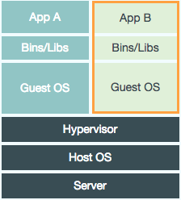

Packer and Docker
Josh Thomas / @jthoms1
Notice: When I say OS, I mean Linux. Windows is not suitable for Server use.
Virtual Machines

- Emulated Hardware on Host OS
- Replacement for bare metal
- Common and accommodating
- Large memory and storage footprint
- JIT is relative
- Development environments made easy
- Software for creating and configuring VMs
- Works on Mac, Windows, and Linux
- Local environment closely matches Prod
How has it helped Earthlings?
Live Demo
- Cloud images made easy
- Identical machine images for multiple platforms
- Provisions similar to Vagrant
- Create exactly the same dev server and prod server
How can it help an Earthling?
Live Demo
- Linux container used for Applications
- Virtualizes without an independent OS Kernel
- Isolates application from the rest of the OS
( port forwarding + dir sharing) - Highly efficient
How does Docker work?

- Linux containers (est 2008)
- Images are layered
- Small memory and storage footprint
- Uptime in ms
- Currently not common but insane growth
- Rapidly changing environment